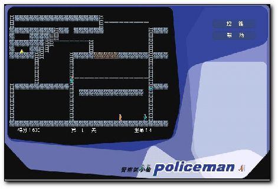

|  |
● 游戏策略 |
1. 本游戏共分85关，通关后游戏自动跳到第一关。
2. 玩家控制小偷的行动，绕开警察的围堵，偷走所有的金块，并且最终爬上云梯。
3. 在游戏进行中，玩家可以在地上挖洞，每个洞可以让一名警察掉入洞中，但是玩家只能在普通的土地（青色）上进行挖洞，而不能在坚硬的土地上（古铜色）挖洞。当玩家想要挖洞的位置的上头是土地或者楼梯时，玩家也不能挖洞。
4. 游戏刚开始时，玩家有四个生命值，每被警察抓住一次，生命值减一。
5. 当玩家偷走所有的金块后，空中就会出现一座云梯，玩家可以沿着云梯爬到顶上，此时游戏过关。 |
| |
|
|